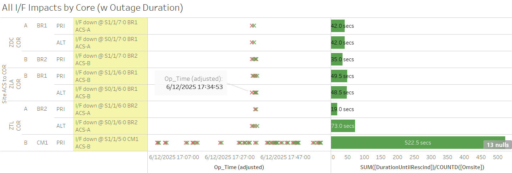
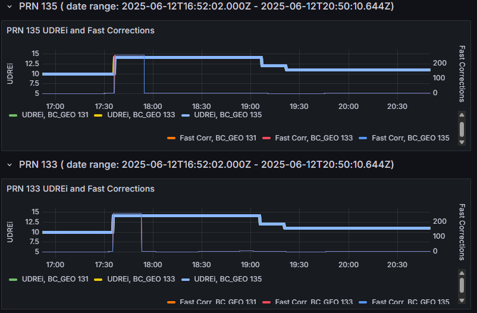
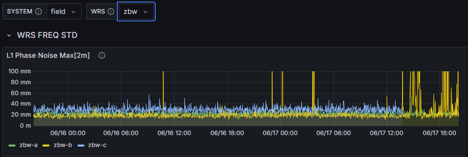
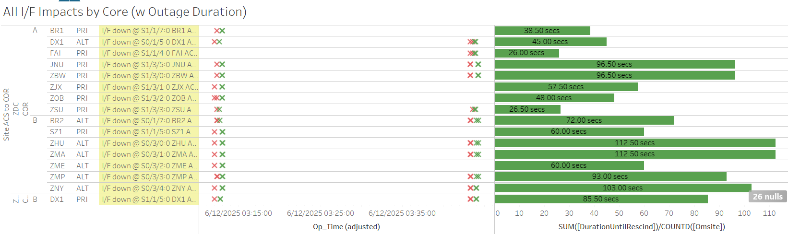

Weekly Highlights 20250611-20250618
6/11-6/17 - L1/L2 Bias Alarms
- 6/11 06:11 - MTP L1/L2 Bias Alarm
- 6/11 14:31 - ZBW L1/L2 Bias Alarm
- 6/15 02:57 - ZBW L1/L2 Bias Alarm
- 6/17 00:23 - MTP L1/L2 Bias Alarm
- 6/17 14:51 - ZBW L1/L2 Bias Alarm
6/12 - BR1/BR2 GUS Switchover-S15/G30 Not Mon (During Generator Maintenance)
- 6/12 17:34 - GUS Switchover - S15 and G30 - Comm interruption to Brewster caused GUS Switchovers to place CM1 and AP1 in Primary Mode; Comm interruption appears to have occurred during monthly generator testing...


6/14-6/17 - SLES-Supported Investigation at CM1
- 6/14 07:02 - GUS Switchover - S15 - BR1 to Primary / CM1 to Backup for Second Level-recommended troubleshooting activity
- 6/16 15:04 - CM1 GUS to Maintenance Mode for
troubleshooting activity to
swap the L1 WMP to Sig Gen cables with the L5 WMP to Sig Gen cables to see if the issue is caused by the cable; Faulted mutliple times and could not establish mode; cables reverted, Control Powered, and restored to Backup at 6/16 19:44 - 6/17 15:03 - CM1 GUS to Maintenance Mode for
troubleshooting activity to
swap the L1 WMP to Sig Gen cables with the L5 WMP to Sig Gen cables to see if the issue is caused by the cable; Faulted mutliple times and could not establish mode; cables reverted, Control Powered, and restored to Backup at 6/17 17:41
Ordered new spare cables via LCSS
6/16 - POC HVAC Failure
- 6/16 16:43 - POC O&M HVAC failed causing SEs 231/232 Router Over-temp -- ref LIR 999735024; last event cleared at 6/16 22:03
6/16 - ZMP WRE-C Freq Std Failed
- 6/16 16:48 - ZMP WRE-C Faulted with SEs 29,52,53,59; Freq std on order -- ref LIR 164688221; Control Powered OFF at 6/16 17:30 until part can be replaced...
- 6/18 15:03 - ZMP WRE-C returns to Maintenance
after replacing Freq Std
- ZMP WRE-C - 6/16/25-6/18/25 - Freq Std failed -- ref LIR 164688221
6/17 - BR2 GUS SE 190 C-Band Tracking Failure
- 6/17 00:18 - BR2 GUS alarmed with SE 190 C-Band Tracking Failure for ~1 second
6/17 - ZBW WRE-B Subframe Reasonability
- 6/17 03:43 - ZBW WRE-B alarmed with SE 728 Subframe Reasonability
- 6/17 14:42 - ZBW WRE-B alarmed with SEs 709 PID Alert and 721 PID WRS Down -- ZBW WRS Outage due to WRE-C down for RF Site Survey
- 6/17 15:36 - ZBW WRE-B alarmed with SE 728 Subframe Reasonability
- 6/17 18:16 - ZBW WRE-B alarmed with SEs 728
Subframe Reasonability and 721 PID WRS Down --
ZBW WRS Outage --
10 Mhz in SL cabinet was not connected or terminated

6/17 - ZBW WRE-C RF Site Survey
- 6/17 13:44 - ZBW WRE-C to Maintenance Mode for RF Site Survey activities...
- 6/17 13:46 - ZBW PCU-C initially powered off manually but restored to re-establish Ring 2 ACS Router at 6/17 14:35 (~2890 seconds)
6/18 - ZOA WRE-A PCU Outage
- 6/18 06:08 - ZOA WRE-A went to No Data Reported; a few minutes later, received SE 0 No Errors from ZOA PCU-A indicating it had power cycled; restored to Normal at 6/18 06:43
6/18 - GUS Switchover-S15 to Support Non-Intrusive Maintenance
- 6/18 07:04 - GUS Switchover - S15 - CM1 to Primary / BR1 to Backup for non-intrusive maintenance to replace data collector -- ref LIR 1098164232
Various Comm Impacts
* Only captures major / long-term comm outages
CM1 Comms
- 6/11 15:09 - CM1 Ring 2 PRI comms flapping; last event cleared at 6/11 23:30 (~4605 seconds total)
- 6/11 18:22 - CM1 Ring 1 ALT comms flapping; last event cleared at 6/11 19:10 (~75 seconds total)
- 6/12 15:04 - CM1 Ring 2 PRI comms flapping; last event cleared at 6/12 23:08 (~4095 seconds total)
- 6/13 17:18 - CM1 RIng 2 PRI comms flapping; last event cleared at 6/13 22:01 (~1246 seconds total)
- 6/16 15:11 - CM1 Ring 2 PRI comms flapping; last event cleared at 6/16 23:02 (~1934 seconds total)
- 6/17 15:49 - CM1 Ring 2 PRI comms flapping; last event cleared at 6/17 22:56 (~2844 seconds total)
OTZ Comms
- 6/13 19:35 - OTZ Ring 1 ALT / Ring 2 PRI comms down hard; both lines cleared at 6/13 00:58 (~19397 seconds)
- 6/15 16:49 - OTZ Ring 1 ALT / Ring 2 PRI comms flapping; last events cleared at 6/15 19:06 (~2574 seconds total)
- 6/16 16:54 - OTZ Ring 1 ALT / Ring 2 PRI comms flapping; last events cleared at 6/16 18:30 (~1897 seconds total)
- 6/17 17:58 - OTZ Ring 1 ALT / Ring 2 PRI comms flapping; last events cleared at 6/17 19:30 (~1842 seconds total)
ZME Comms
- 6/14 01:24 - ZME Ring 1 ALT / Ring 2 PRI comms flapping; last event cleared at 6/14 14:10 (~314 seconds total)
- 6/15 00:30 - ZME Ring 1 ALT / Ring 2 PRI comms flapping...
- 6/17 14:43 - ZME Ring 2 PRI comms down hard; ZME Ring 1 ALT comms also down hard at 6/17 14:45; both lines cleared at 6/17 14:49 (~340 seconds max); comm flapping stopped
- 6/18 10:10 - ZME Ring 1 ALT / Ring 2 PRI comms down hard; both lines cleared at 6/18 10:13 (~177 seconds)
Other Sites
- 6/11 06:09 - MTP Ring 1 comms down hard; events cleared at 6/11 06:42 (~23m)
- 6/11 13:16 - YQX Ring 1 PRI / Ring 2 PRI comms down hard; both lines cleared at 6/11 17:16 (~14385 seconds)
- 6/11 15:53 - MTP Ring 1 comms down hard; line cleared at 6/11 16:02 (~9m 55s)
- 6/11 17:20 - AP1 Tool Port Up/Down SEs due to onsite work by Second Level
- 6/12 03:12 - Brief ~60 second comm hit impacting both ZDC Core Routers
- 6/12 03:45 - Brief ~60 second comm hit impacting both ZDC Core Routers

- 6/15 02:28 - YYR Ring 1 comms flapping; last event cleared at 6/15 02:47 (~377 seconds total)
- 6/17 19:15 - ZDC-ZAU COR-COR Ring 2 ALT comms down hard; lines cleared at 6/17 19:35 (~1207 seconds)
- 6/17 19:54 - JNU Ring 1 PRI / Ring 2 ALT comms down hard; both lines cleared at 6/17 20:06 (~752 seconds)
- 6/18 07:29 - MSD Ring 1 Eth comms down hard; line cleared at 6/18 07:39 (~9m 55s)
Mexico Ring 2 Down Hard...
- Targeting network upgrade in CY26
YFB Ring 2 Down Hard...
YFB requires satcom upgrades by NavCanada to restore... ref LIR 892056924
- 11/6/24 18:48 - YFB Ring 2 down hard... both rings to YFB down hard...
List of current offline WREs
List of current offline WREs -- ref WAAS Status Monitor
All Depot shipments to Mexico are halted until the customs process can be finalized
- MMD WRE-A - 3/31/25-... - Freq Std failed -- ref LIR 953873324
- MTP WRE-B - 11/18/24-... - Receiver inits failing -- ref LIR 898330924
- MMX WRE-A - 10/13/24-... - Freq Std failed -- ref LAD 879853824
- MMX WRE-C - 5/15/24-... - Processor failed and could not be restored -- ref LIR 798352224
- MPR WRE-B - 5/3/24-... - Inits failing -- looks like a bad freq std; due to shipping issues, there is no spare Freq Std and no ETA to recover WRE-B... -- ref LIR 44170821
5/11/23-... - MX Ring 2 Satcom Upgrade
- 5/11/23 17:01 - MX Ring 2 SatCom upgrade begins; MX Ring 2 OFFLINE until upgrade troubleshooting is complete
All sites are currently connected through Tijuana with new cables; but still large UDP data packets (WAAS Multicast) being dropped on Ring 2 -- no further actions to take at Tijuana
- All MX Ring 2 currently down with no ETA...
-
WAAS Second Level assessing situation before further troubleshooting...

Major Events


Core I/F Status

Comm Events

Mexico Comm Status